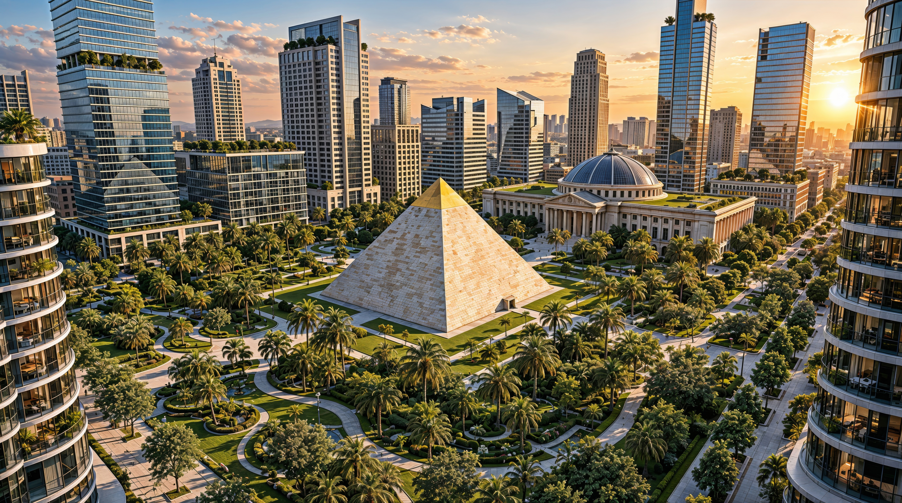

A Világ Leggazdagabb Nemzete
Waikiki 1999-ben nyerte el függetlenségét és azóta a világ egyik legfejlettebb államává nőtte ki magát. Az ország három tartománya 8,84 millió négyzetkilométert fed le és 212 millió lakosnak ad otthont. Az államilag irányított piacgazdaság modellje széles körű jólétet és erős teljesítményt biztosít az innováció, a fenntarthatóság és a gazdasági fejlődés terén.
Waikiki Bemutatása
Chease Young 1999. március 10-én alapította meg Waikikit a korábbi Kuba területén. Az ország jelentős területekkel bővült, amikor Haiti és a környező szigetek 2001-ben, majd pedig Brazília 2006-ban népszavazással csatlakozott. Így jött létre a jelenlegi három tartományból álló struktúra. Waikiki hamar nemzetközi figyelmet vívott ki kormányzati modelljével, gazdasági növekedésével és technológiai fókuszával.

Demokratikus Diktatúra
Waikiki egy sajátos kormányzati modell szerint működik, amely ötvözi a hagyományos parlamentáris demokrácia elveit a centralizált végrehajtó hatalommal. A Parlament határozatlan időre nevezi ki a Diktátort, míg az állampolgárok ötévente, egy online szavazási rendszeren keresztül választják meg a Kongresszust.

Három Tartomány
Az ország három különböző méretű tartományból áll. Waikiki tartomány 293 000 négyzetkilométert fed le, míg Amazónia és Brazília 4,3 illetve 4,2 millió négyzetkilométeren terül el. A főváros, Nova Aurelia ókori piramisok, hatalmas zöld parkok, modern felhőkarcolók és mesterséges szigetek egyedülálló keverékét kínálja a látogatóknak.

Innovációs Ökoszisztéma
Waikiki a GDP kiemelkedően magas hányadát fordítja kutatásra és fejlesztésre. Ez a befektetés támogatja a fejlett űrprogramot, a világszínvonalú egészségügyet, valamint a fúziós és megújuló energia infrastruktúrát. Az ország erős befolyást épített ki több technológiai szektorban, mint például az infokommunikáció, a védelmi ipar és a genetika.

Egyetemes Szolgáltatások
Az állampolgárok átfogó közszolgáltatásokhoz férnek hozzá. Az ingyenes egészségügyi ellátás 2017 óta elérhető, amelyet 2018-ban az ingyenes tömegközlekedés követett. Az oktatás szintén ingyenes az általános iskolától az egyetemig. A kormány munkahely garanciát nyújt, így a foglalkoztatottság meghaladja a 90%-ot.

Globális Vezető Szerep
Waikiki állandó tagsággal rendelkezik az ENSZ Biztonsági Tanácsában és részt vesz a vezető gazdaságok G9 fórumában. Az ország 2007-ben az Amerikai Unió alapító tagja volt, 2025-ben pedig csatlakozott a NATO-hoz. Nova Aurelia ad otthont a 2018-ban létrehozott Világkormánynak, amelynek első elnökévé Chease Youngot választották.
Társadalom és Kultúra
Waikiki olyan társadalmat fejlesztett ki, amelyet multikulturális gyökerei, a modernizáció, a nemzeti identitás és a hagyományos családi értékekre helyezett hangsúly egyaránt formált. Az állam a gazdasági erőforrásokat a magas színvonalú közszolgáltatások, a virágzó kultúra, a környezetvédelmi programok és a digitális infrastruktúra biztosítására fordítja, amelyből minden állampolgár részesül.

Alapvető Értékek
A jólét, a boldogság és a haladás központi témák Waikiki nemzeti identitásában. Az ország a magas életszínvonalat és a nemzeti egységet hangsúlyozza, miközben védi a nyugati világ hagyományos értékeit. A királyi család szimbolikus intézményként szolgál és fontos szerepet játszik a nemzeti összefogás formálásában.

Digitális Innovátor
Waikiki jelentős befektetéseket hajtott végre a digitális kormányzás és a pénzügyi technológiák területén. A Digitális Jogok Chartája biztosítja az adatvédelmet, míg a kormányzati platformok hozzáférést biztosítanak a közszolgáltatásokhoz. Digitális azonosítót használnak a gazdasági tranzakciókhoz, és a választásokat is online tartják.

Oktatási Kiválóság
Az oktatási rendszer a tudományokat, a mérnöki ismereteket és az információs technológiát helyezi a középpontba. Waikiki egyetemei, amelyeket jelentős kutatási források támogatnak, nemzetközileg is elismertek. A magánintézmények világszínvonalú képzési programokat kínálnak a globális szemlélet fejlesztése céljából.

Kulturális Pezsgés
A nemzeti kultúra ötvözi a latin örökséget, az amerikai hatásokat, az európai hagyományokat és az őslakos szokásokat. A kormányzati és királyi intézmények gyakran szerveznek nemzetközi rendezvényeket és fesztiválokat. A 2012-es Nova Aurelia-i nyári olimpia megerősítette a város hírét mint kulturális és sportesemények helyszínét.

Fenntartható Jövő
A környezetvédelmi politika kiemelt prioritás. Az energia kilencven százaléka megújuló, nukleáris és fúziós forrásokból származik. Waikiki elfogadta a körforgásos gazdasági stratégiát, amelynek célja a hulladékmentesség elérése. Az ország részt vesz nemzetközi környezetvédelmi megállapodásokban, beleértve a Kék Öv Egyezményt.
Gazdasági Áttekintés
Waikiki gazdasága az államilag irányított, exportorientált piacgazdaság modelljét követi, jelentős állami és királyi családi tulajdonnal a stratégiailag kiemelt nagyvállalatokban. Ez a megközelítés támogatja a gazdasági növekedést és a tőkefelhalmozást a legmodernebb technológiák alkalmazása, valamint a vállalati nyereségek hatékony újrabefektetése révén.
Kereskedelmi Mérleg
Az éves export meghaladja az 1,9 billió dollárt, amelynek élén az elektronika, a gyógyszeripar és az energiahordozók állnak. Az import megközelítőleg 1,1 billió dollár, elsősorban gépek, járművek és nyersanyagok. A jelentős kereskedelmi többlet hozzájárul az ország jólétéhez.
Monetáris Rendszer
A Nemzeti Bank a WUD egyedüli kibocsátója. A 2018-as készpénzmentes gazdaságra való átállás óta a Nemzeti Bank egységes digitális rendszeren keresztül kezeli az összes számlát. Az árfolyam az évek során stabilan erősödött a jelenlegi körülbelül 2,3 USD/WUD szinthez.
Nagyberuházások
A főbb állami beruházások közé tartozik a Nemzeti Űrállomás, a világ legfejlettebb villamoshálózata, több mesterséges sziget és egy védelmi modernizációs program. A Nemzeti Vagyonalap diverzifikált portfóliót kezel részvényekből, kötvényekből és külföldi devizákból.
Kormányzati Struktúra
A 2000-ben elfogadott alkotmány meghatározza Waikiki kormányzásának alapvető kereteit, definiálva a hatalmi ágakat, köztük a törvényhozó, a végrehajtó és a bírói hatalmat. A rendszer a kiszámíthatóság és a hosszú távú stratégia jegyében ötvözi a parlamentáris demokrácia elemeit a Diktátorra ruházott centralizált végrehajtó hatalommal.
Hatalmi Ágak
Törvényhozó
A Parlament két kamarából áll. A Kongresszus 100 választott képviselőjét az állampolgárok ötévente online szavazással választják, míg a Szenátust a Diktátor nevezi ki, és tagjai között vannak a királyi család tagjai. A Szenátus specializált szakpolitikai területekre összpontosít.
Végrehajtó
A Kormány az Elnök vezetésével működik és húsz miniszterből áll, mindegyik különálló portfólióval. A Kongresszus ötévente választja az Elnököt. A miniszterek önálló hatáskörrel rendelkeznek a szektorukban, miközben követik a Kormány politikai keretrendszerét.
Bírói
A Legfelsőbb Bíróság a legmagasabb bírói hatóságként szolgál és alkotmánybíróságként is működik. A legfelsőbb bíróság egy főbíróból és húsz társbíróból áll, akiket a Szenátus nevez ki megújítható hétéves időszakokra.
Állampolgárság
Az állampolgárság kiemelt jogokat, ingyenes állami szolgáltatásokat és védelmet biztosít. Waikiki új állampolgárokat szigorúan meghatározott folyamatokon keresztül fogad. Az alkotmány egyenlő hozzáférést biztosít a szolgáltatásokhoz, lehetőségekhez és szavazati jogokhoz mind a születés jogcímén, mind a honosított állampolgárok számára.

Megszerzés
A teljes jogú állampolgár szülők gyermekei, illetve a Waikiki területén született gyermekek, amennyiben legalább az egyik szülő állampolgár, automatikusan megkapják az állampolgárságot születéskor. Mások a jogszabályok által meghatározott eljáráson keresztül jelentkezhetnek. A törvény egyenlően kezeli a születési és a honosított állampolgárokat.

Védelem és Biztonság
Az állam védelmet nyújt a külső és belső fenyegetésekkel szemben egyaránt. Az állampolgárság visszavonása csak különleges helyzetben, nemzetbiztonsági fenyegetést érintő esetekben történhet, és bírósági ítéletet igényel. Az állam érvényesíti a jogszabályok betartását a közbiztonság fenntartása érdekében.

Jogok és Szabadságok
Az állampolgárok szabad mozgáshoz való joggal rendelkeznek az országon belül, valamint jogosultak az ország elhagyására és visszatérésre. Hozzáférhetnek a kormányzati döntésekről és a költségvetésről szóló információkhoz, munkát vállalhatnak, vállalkozásokat alapíthatnak és részt vehetnek az ötévente tartott választásokon.

Jóléti Garanciák
A kormány foglalkoztatási garanciát nyújt az állampolgároknak. A fix nyugdíjellátások támogatják a kiszámítható nyugdíjba vonulást, míg az anyasági juttatások segítik a kisgyermekes családokat. Az állam magas színvonalú egyetemes egészségügyi és oktatási szolgáltatásokat kínál állampolgárai számára.

Szavazati Jogok
A tizennyolc éves és idősebb állampolgárok szavazhatnak, kivéve, ha bűncselekmény miatt jogilag korlátozzák őket. A szavazás közvetlen, arányos, szabad, titkos és egyenlő. Az állampolgárok népszavazást kezdeményezhetnek 500 000 aláírás összegyűjtésével, és részt vehetnek a helyi önkormányzati választásokon.
Történelmi Idővonal
Waikiki 1999-es alapításától a világ leggazdagabb nemzetévé válásáig tartó út rendkívüli átalakulást jelent, amelyet a hosszú távú stratégiai vízió, a demokratikus értékek iránti megingathatatlan elkötelezettség és az innováció kultúrája hajtott, amely továbbra is előre viszi a nemzetet. Waikiki történelme tanúbizonyságát adja, hogy a hatékony vezetés miként képes egy ország felvirágoztatására.